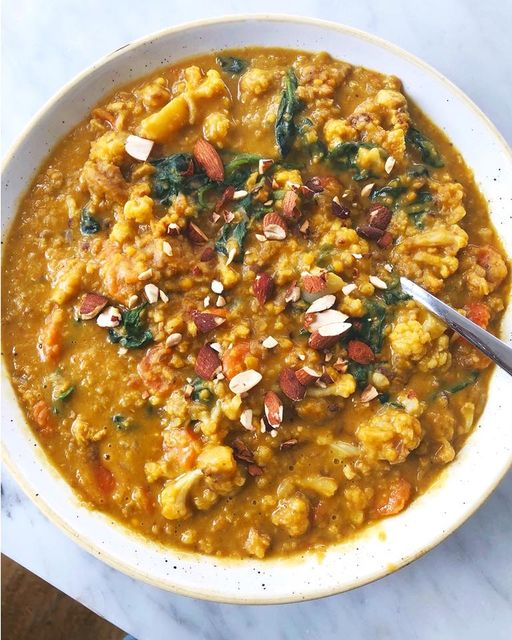

Cauliflower and Red Lentil Dhal

This is one of my favourite warming dishes. Cooking the lentils in coconut milk makes each bite much creamier, while the tomatoes, cumin, paprika, chilli and curry powder add such a lovely blend of flavours.
Serves: 4 adults.
Preparation time: 10 minutes.
Cooking time: 55 minutes
Ingredients
- 2 tsp coconut oil
- 1 onion, roughly chopped
- 2 carrots, peeled and chopped
- 2 garlic cloves, chopped
- 2 tsp medium curry powder
- 1 tsp smoked paprika
- 1 tsp mustard seeds
- 1¼ cups split red lentils (200g)
- handful of dried apricots roughly chopped (about 6)
- 2 cans coconut milk
- 1 cauliflower, cut into florets
- olive oil
- handful of baby spinach
- salt and pepper
Method
- Preheat the oven to 240 C
- Melt coconut oil into a large saucepan over a medium heat. Add onion, carrots, garlic, and pinch of salt and cook until salt, around 15 minutes.
- Add curry powder, paprika, and mustard seeds and cook for a further 5 minutes, before adding the lentils and apricots. Mix well and cover with the tinned coconut milk, stirring to prevent it catching and burning. If needed, keep adding a dash of coconut or almond milk from a carton until the lentils are cooked through and the consistency is thick and a little sticky, about 30-35 minutes.
- While this cooks, roast the cauliflower. Put the florets into a baking tray with a drizzle of olive oil and some salt and pepper, and roast for 8 minutes. Remove and add the florets to the lentils and cook for a further 5-10 minutes. You want the cauliflower be cooked but still have a little bite.
- Add the spinach if using and leave it to wilt before serving.